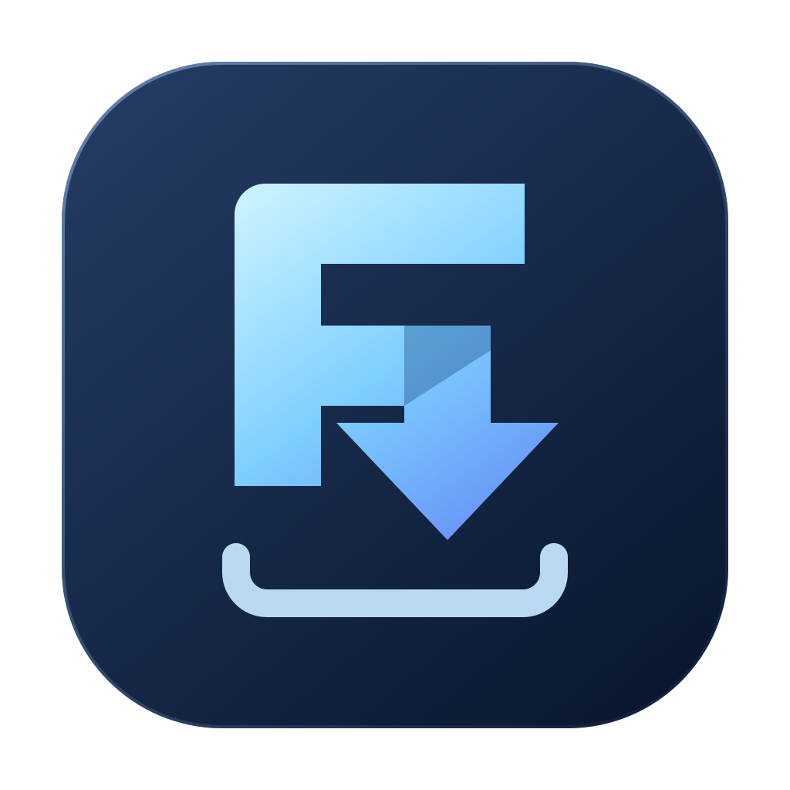
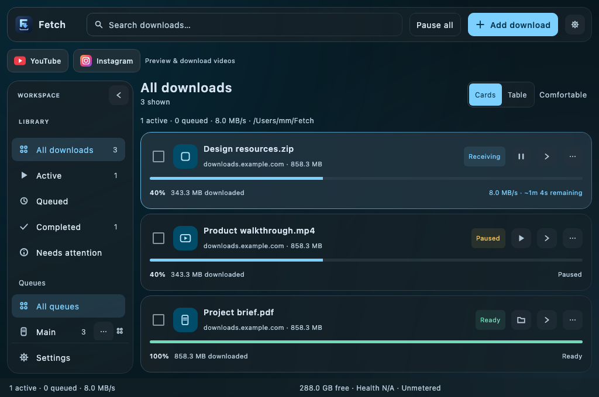
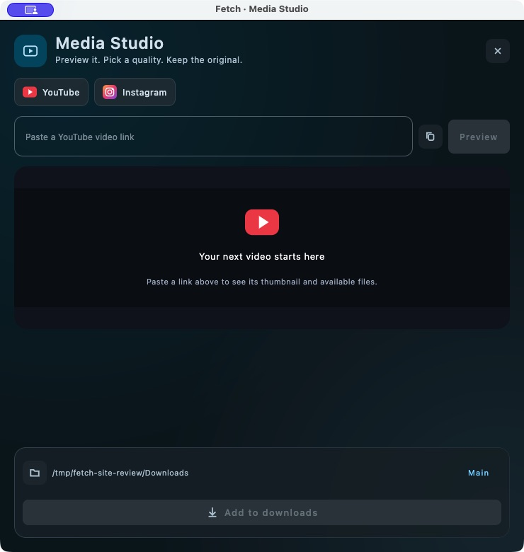
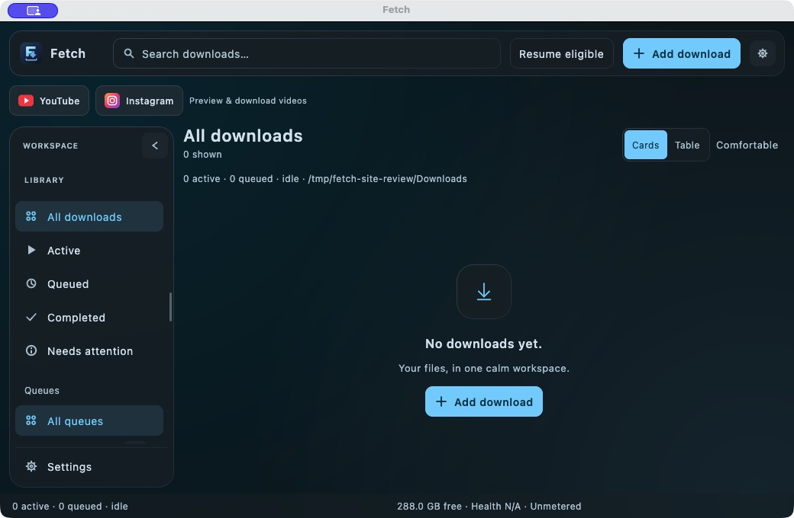
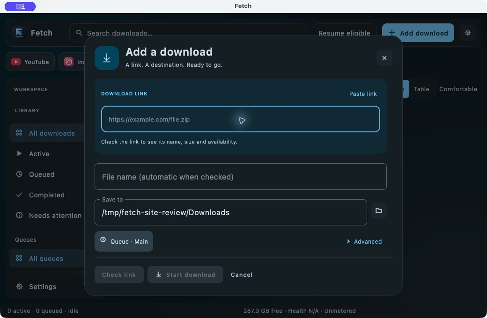

A workspace that adapts
Drag the sidebar to your preferred width, collapse it to an animated icon rail, or make the window smaller. Navigation keeps scrolling.
Resizable · Collapsible
Fetch DESKTOP SourceFETCH 1.0 · KOTLIN MULTIPLATFORM
A focused desktop download manager. Soft glass, expressive Material colors, and a workspace that fits the way you work.
macOS release · Windows & Linux build targets

ROOM TO FOCUS
A compact window with the detail you need, exactly when you need it.
Drag the sidebar to your preferred width, collapse it to an animated icon rail, or make the window smaller. Navigation keeps scrolling.
Resizable · CollapsibleScan progress, speed and remaining time. Expand a card for details, switch to a table, or right-click for actions at your pointer.
Cards · Table · DetailsResumable transfers preserve their progress. Queue controls and a useful tray menu keep the essentials within reach.
Pause · Resume · QueuesSIX DISTINCT PERSONALITIES
Each Material HCT palette brings its own surfaces, accents and tonal depth.
These are renders of the app's actual Compose components with sample data.
MEET MEDIA STUDIO
Paste a YouTube or Instagram link to find its thumbnail and available files. Preview supported video, pick a quality, then add it to your download queue.
Availability depends on the source. Private, audience-restricted or sign-in-required media may be unavailable. Preview supports compatible codecs; segmented-only and DRM formats are excluded.

ON THE DESKTOP
Captured from the packaged app in a clean demonstration workspace. Open an image to inspect it.


BRING FETCH TO YOUR DESKTOP
A self-contained app with its Java runtime and media tools included.
Download the DMG, open it, and drag Fetch to Applications.
Download for MacApple Silicon (M-series) · Unsigned, not notarized.
Intel Macs require a build on an Intel Mac. Review the release notes before installing.
MSI and EXE packaging is configured. A verified Windows installer is not included in this release.
Open installer workflowBuild on Windows x64 with JDK 17. See the desktop README for prerequisites and commands.
DEB packaging is configured. A verified Linux installer is not included in this release.
Open installer workflowBuild on Linux with JDK 17 and desktop media libraries. The workflow uses Ubuntu x64.
BUILT IN THE OPEN
The independent KMP build shares the Span transfer engine. Desktop uses Compose, with JavaFX for inline media. The Android SDK and sample app keep their own documentation.
Explore the architecture and build guide ↗cd multiplatform
python3 tools/media/prepare.py
./gradlew :desktopApp:run
# Build on the target OS
./gradlew :desktopApp:packageDistributionForCurrentOSThe README covers Android SDK setup, platform requirements and bundled-tool licenses.